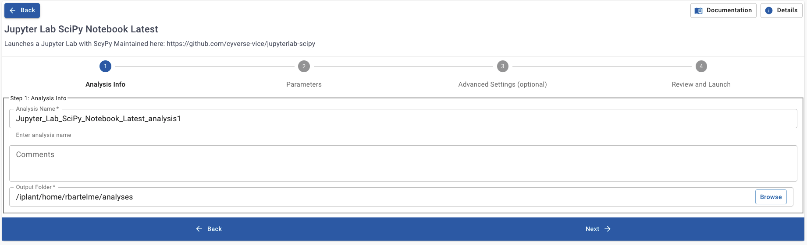

|Home_Icon2|_ Learning Center Home
Command Line and the Unix Shell¶
learning-objectives
Know the command line’s utility
Define what the filesysem is
Use basic navigation commands to interact with the file system
Recognize the similarities between shell commands and iRODS
Describe resources to continue learning command line applications
Why should you care about the shell?¶
At a high level, computers do four things:
run programs
store data
communicate with each other
interact with users
The graphical user interface (GUI)
The GUI is the most widely used way to interact with computers
Often the first way people learn to interact with a computer
Give instructions with mouse (ex. run a program, create a folder/directory, move files, etc.)
Difficult to scale since it requires human interaction
The shell - a command-line interface (CLI).
Less common way to interact with personal computers. Enables remote access to servers and analyses.
Can automate repetitive tasks
Commands are reproducible
Example
If we have to copy the third line of each of a thousand text files stored in thousand different folders/directories and paste it into a single file line by line.
Using the traditional GUI approach will take several hours to do this.
Using the shell this will only take a couple of minutes (at most).
The Shell is a program which runs other programs rather than doing calculations itself.
programs can be as complicated as a climate modeling software
as simple as a program that creates a new folder/directory
simple programs used to perform stand alone tasks are usually refered to as commands.
most popular Unix shell is Bash, (the Bourne Again SHell).
Bash is the default shell on most modern implementations of Unix
Whether accessed through the graphical user interface or the shell, all computers contain a file system.

Setting up Our Shell Environment:¶
Launch JupyterLab VICE Application:
Search for the application Jupyter Lab SciPy Notebook Latest here:
Setup Outputs:

Add Our Input Folder:


Memory Allocation:

Launch Application on DE2:
Launch the Shell in JupyterLab:
Command Prompt:

Optional: Change to JupyterLab Dark Theme

Question
In small, groups help each other get the shell prompt open inside JupyterLab.
If you all have JupyterLab’s shell launched, please discuss the following question.
How does learning aspects of the shell help us create FAIR data?
Do you think we can use the shell to do data tasks on the CyVerse Data Store?
Introduction to Shell Commands¶
Print working directory (pwd)
Directories are equivalent to folders on a desktop computer, but are like an address for the computer’s file system.
To find “where” you are we can use the command pwd:
$ pwd
/home/jovyan/work
List files and directories (ls)
We can see the contents of our current directory by running ls.
$ ls
data-shell downloads.stderr.log downloads.stdout.log
Your results may be slightly different depending on your operating system and any system modifications.
Adding Options to ls
With the option, or flag, -F we can differentiate between files and folders. All folders will appear in the shell prompt with a / appended to their names.
$ ls -F
data-shell/ downloads.stderr.log downloads.stdout.log
Changing Directories
After running pwd we know we’re in the directory /home/joyvan/work.
How can we change our location to the data-shell directory? The cd or change directory command.
$ cd data-shell
Making Directories
To make directories in the command line we can use the command mkdir
$ mkdir thesis
$ ls -F
creatures/ data/ molecules/ north-pacific-gyre/ notes.txt pizza.cfg
solar.pdf thesis/ writing/
Now let’s change into our directory thesis/
$ cd thesis
$ ls -F
When we run ls -F we don’t see any output in the terminal.
So let’s make some files in this directory.
Creating Files in the Shell
Good Names for Files and Directories
Don’t use spaces.
Spaces are used to separate arguments on the command line it is better to avoid them in names of files and directories. You can use - or _ instead (e.g. north-pacific-gyre/ rather than north pacific gyre/).
Don’t begin the name with - (dash).
Commands treat names starting with - as options or flags.
Stick with letters, numbers, . (period or ‘full stop’), - (dash) and _ (underscore).
If you need to refer to names of files or directories that already have spaces or other special characters, you should surround the name in quotes (“”).
$ nano draft.txt
Let’s type in a few lines of text. Once we’re happy with our text, we can press Ctrl+O (press the Ctrl or Control key and, while holding it down, press the O key) to write our data to disk (we’ll be asked what file we want to save this to: press Return to accept the suggested default of draft.txt).

Once our file is saved, we can use Ctrl-X to quit the editor and return to the shell.
In nano, along the bottom of the screen you’ll see ^G Get Help ^O WriteOut. This means that you can use Control-G to get help and Control-O to save your file.
nano doesn’t leave any output on the screen after it exits, but ls now shows that we have created a file called draft.txt:
$ ls
draft.txt
We can also use the touch command to create files.
$ touch my_file.txt
How large is my_file.txt?? What command can we use to check this?
Getting help with commands
We can pass a –help option to the command, such as:
$ ls --help
The man command
Note
The man command will only work in the command line with certain systems.
The GNU website manual will be useful if this is not available (like in our Docker container).
$ man ls
This will open the manual in your terminal with a description of the ls command and its options and, if you’re lucky, some examples of how to use it.
To navigate through the man pages, you may use ↑ and ↓ to move line-by-line, or try B and Spacebar to skip up and down by a full page.
To quit the man pages, press q.
Manual pages on the web
GNU provides links to its manuals including the core GNU utilities , which covers many commands introduced within this lesson.
Accessing the Data Store via the Shell¶
We can access the data store with a command line toolset called iRODS. iRODS allows us to move files from the Discovery Environment container to other directories in the Data Store.
Configuring iRODS
First let’s configure iRODS with the command iinit
$ iinit
Enter the host name (DNS) of the server to connect to: data.cyverse.org
Enter the port number: 1247
Enter your irods user name: <your_cyverse_username>
Enter your irods zone: iplant
Enter your current iRODS password: <your_cyverse_password>
Working Directory on the Data Store
$ ipwd
/iplant/home/<Your Cyverse Username>
Changing Directories in the Data Store
$ icd /iplant/home/shared/foss/spring-2021
Optional: Create a folder in the data store
This can be done via the web GUI, like we did earlier. Or you can use the command line and iRODS to make a folder with the same name as your CyVerse username in the path /iplant/home/shared/foss/spring-2021. For example after using icd above, I would write the following:
$ ipwd
/iplant/home/shared/foss/spring-2021
$ imkdir rbartelme
$ ils
/iplant/home/shared/foss/spring-2021:
C- /iplant/home/shared/foss/spring-2021/data-shell
C- /iplant/home/shared/foss/spring-2021/rbartelme
FAIR Data Group Challenge
In small groups determine how you can use irsync with the flags -rKva to transfer the folder molecules from the data-shell directory to the data store folder you created in the foss directory in the Data Store. From the iRODS irsync manual determine as a group what makes the command “FAIR”.
Hint
You need to add i: to the beginning of the file/folder argument to tell iRODS the location of items in the data store.
irsync behaves differently with / after the folder name than without the slash.
Look up the flags provided above in the irsync manual. Which flag enables a method that checks the validity of the data?
Further Practice¶
Note
This is was just a brief summary of how to use the command line. There is much, much more you can do.
For more information check out the The Carpentries Shell Lesson page. This lesson uses the folder data-shell which is already in your Jupyter Lab instance. Work through these lessons on your own or in groups as homework.
On Github: Github Repo Link
Send feedback: Tutorials@CyVerse.org